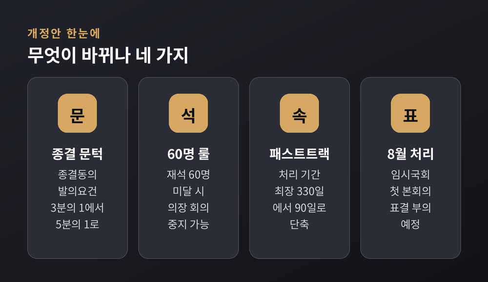
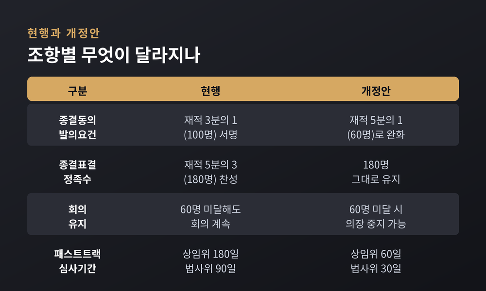
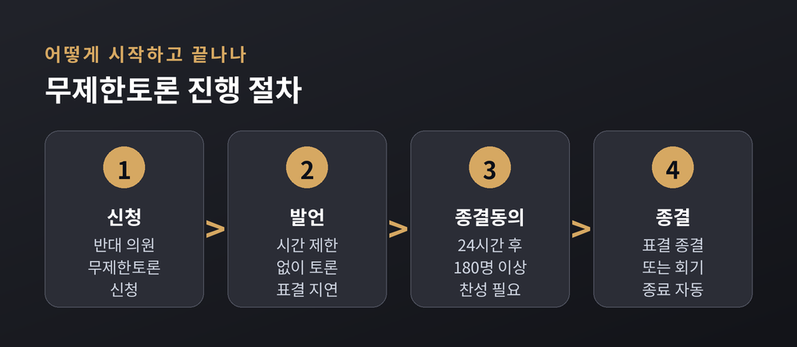
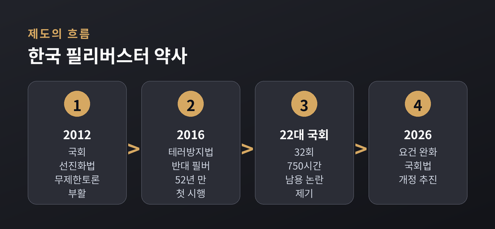
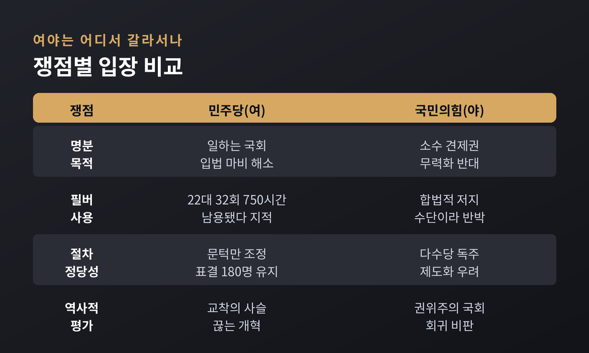

필리버스터 요건 완화 국회법 개정안, 8월 임시국회서 무엇이 바뀌나
이번 글에서는 8월 임시국회에서 처리 수순을 밟고 있는 '필리버스터(무제한토론) 요건 완화' 국회법 개정안을 정리해 보겠습니다.
무엇이 바뀌는지, 왜 여야가 맞서는지를 한쪽으로 기울지 않게 짚어 보려 합니다.
먼저 핵심부터 말씀드립니다. 개정안은 필리버스터를 끝낼 문턱을 낮추고, 유지 조건을 까다롭게 만들며, 패스트트랙 처리 기간을 크게 줄입니다. 여당은 '일하는 국회'를, 야당은 '소수 견제권 약화'를 이야기합니다.
지금 국회에서 벌어지는 일
2026년 7월 31일, 국회 본회의에 국회법 개정안이 올랐습니다.
더불어민주당이 주도했고, 국민의힘은 그날 오후 4시 35분쯤부터 필리버스터에 들어갔습니다.
무제한토론은 오래가지 못했습니다.
본회의 상정 7시간 23분 만인 8월 1일 0시, 회기가 끝나면서 자동으로 종결됐습니다.
앞서 국회는 7월 임시국회 회기를 8월 4일에서 8월 1일로 앞당겨 단축해 둔 상태였습니다.
국회법에는 무제한토론 도중 회기가 끝나면 토론도 종결된 것으로 본다는 조항이 있습니다.
그리고 그 안건은 다음 회기 첫 본회의에서 지체 없이 표결합니다.
그래서 이 개정안은 8월 임시국회 첫 본회의에서 처리될 전망입니다.

개정안은 구체적으로 무엇을 바꾸나
첫째, 필리버스터를 끝내자는 종결동의안의 발의 문턱을 낮춥니다.
지금은 재적의원 3분의 1, 그러니까 300석 기준 100명이 서명해야 종결동의안을 낼 수 있습니다.
개정안은 이를 5분의 1인 60명으로 내립니다.
다만 마지막 종결 표결에 필요한 정족수, 재적 5분의 3인 180명은 그대로 둡니다.
'종결을 시작할 문턱'만 낮추는 셈입니다.
둘째, 이른바 '60명 룰'입니다.
현행법은 무제한토론이 시작되면 본회의장에 60명이 안 차도 회의를 계속할 수 있게 예외를 뒀습니다.
개정안은 이 예외를 없앱니다.
토론 중 자리를 지키는 의원이 의사정족수 60명에 못 미치면 국회의장이 회의를 중지할 수 있습니다.
무제한토론을 이어가려면 최소 60명이 밤새 자리를 지켜야 하는 구조로 바뀝니다.
셋째, 패스트트랙 처리 기간을 줄입니다.
상임위원회 심사 기한은 180일에서 60일로, 법제사법위원회 단계는 90일에서 30일로 단축합니다.
본회의 상정 시한도 부의 후 60일 이내에서 첫 본회의로 앞당깁니다.
최장 330일이던 처리 기간이 90일 안팎으로 짧아집니다.
넷째, 무제한토론을 시작하는 실시 요건도 손봅니다.
지금은 재적 3분의 1이 서명한 요구서만 내면 토론이 열립니다.
개정안은 재적 5분의 1이 동의안을 낸 뒤 재적 3분의 1의 찬성으로 의결하도록 바꿉니다.
시작 절차에 표결 단계를 하나 더 두는 방식입니다.

무제한토론은 어떻게 시작하고 끝나나
제도를 이해하면 쟁점이 또렷해집니다.
필리버스터는 시작과 종결이 각각 정족수로 묶여 있습니다.
먼저 안건에 반대하는 의원들이 무제한토론을 신청하면 토론이 열립니다.
한 번 등단한 의원은 시간 제한 없이 발언할 수 있습니다.
발언자가 이어지는 한 표결은 미뤄집니다.
종결에는 두 갈래 길이 있습니다.
하나는 회기가 끝나면 자동으로 종결되는 것입니다.
7월 31일의 무제한토론도 회기 단축으로 이렇게 끝났습니다.
다른 하나는 강제 종결입니다.
토론 시작 24시간이 지나면 재적 5분의 3, 곧 180명 이상의 찬성으로 토론을 끝낼 수 있습니다.
이번 개정안이 건드리는 지점은 이 종결로 가는 '입구'와, 토론을 유지할 '체력'입니다.

왜 중요한가 — 필리버스터라는 제도
필리버스터는 소수 정당이 다수당의 강행 처리에 맞서는 합법적 지연 수단입니다.
발언 시간에 제한을 두지 않고 토론을 이어가 표결을 늦춥니다.
한국에서는 2012년 국회선진화법으로 부활했습니다.
당시 새누리당이 주도해 통과시킨 법입니다.
직권상정 요건을 엄격히 막는 대신, 몸싸움 국회를 줄이려 자동상정제와 신속처리제, 무제한토론을 함께 들여왔습니다.
첫 사례는 2016년 2월이었습니다.
야당이던 더불어민주당 등이 테러방지법에 반대하며 필리버스터를 벌였습니다.
1964년 김대중 신민당 의원 이후 52년 만의 본회의 무제한토론으로 기록됐습니다.
예전엔 소수가 마이크를 붙잡는 마지막 저항이었습니다.
지금은 그 문턱을 어디에 둘지가 다툼의 한복판에 섰습니다.
필리버스터가 소수 보호 장치이면서 동시에 입법 지연 수단이라는 양면을 지녔기 때문입니다.

여야는 어디서 갈라서나
여당의 명분은 '일하는 국회'입니다.
민주당은 22대 국회 들어 국민의힘이 필리버스터를 32번, 750시간이나 썼다고 지적합니다.
소수 보호 장치가 민생 입법을 막는 도구로 쓰였다는 주장입니다.
7월 31일 찬성 토론에 나선 문금주 의원은 "12년간 국회선진화법 뒤에 숨어 굳어진 입법 마비의 사슬을 끊는 개혁"이라고 말했습니다.
야당은 '소수 견제권 무력화'로 맞섭니다.
국민의힘은 합법적 견제 수단을 다수당이 힘으로 약화한다고 반발합니다.
"본회의장을 여당 의원총회장으로 만들려는 것"이라는 비판도 나왔습니다.
필리버스터 첫 주자로 4시간 22분을 발언한 김미애 의원은 "이것이 오늘 꼭 통과시켜야 할 민생입법이냐"고 물었습니다.
세 번째 주자 김민전 의원은 "무제한토론까지 단축하는 건 권위주의 시대 국회로 돌아가는 것"이라고 주장했습니다.
한쪽은 반복된 남용을 걱정하고, 다른 한쪽은 저지 수단의 소멸을 걱정합니다.
같은 제도를 두고 시선이 정반대입니다.

앞으로의 관전 포인트
개정안은 8월 임시국회 첫 본회의에서 표결에 부쳐질 것으로 보입니다.
과반 의석을 가진 여당의 뜻대로 통과될 가능성이 큽니다.
다만 남는 물음이 있습니다.
종결 표결 정족수 180명은 그대로 두었으니, 여당 주장처럼 '문턱 조정'에 그칠 수도 있습니다.
반대로 '60명 룰'과 발의요건 완화가 겹치면, 야당 말대로 소수의 저지력은 실질적으로 줄어듭니다.
제도의 무게 추가 어느 쪽으로 기우는지는 실제 운영에서 드러날 것입니다.
국회 전문위원조차 의장의 회의중지권을 두고 "현실적 측면을 더 검토할 필요가 있다"는 신중론을 남겼습니다.
법안이 통과되더라도 실제 본회의장에서 60명을 어떻게 채우고 확인할지, 의장의 중지 판단을 어디까지 인정할지 같은 운영상의 물음이 이어질 수 있습니다.
지금의 여야가 언젠가 자리를 바꾸면, 오늘의 다수는 내일의 소수가 됩니다.
그때도 같은 잣대를 받아들일 수 있느냐가 이 개정의 진짜 시험대일지 모릅니다.
숫자 몇 개의 변화가 국회의 균형을 어떻게 바꿀지, 아직은 지켜봐야 할 대목이 많습니다.
정리하면 이렇습니다.
이번 개정안은 필리버스터를 없애는 것이 아니라, 그 문턱과 조건을 다시 짜는 일입니다.
결국 관건은 하나입니다 — "효율과 견제 사이, 저울을 어디에 둘 것인가."
일하는 국회를 바라는 마음과 소수를 지키려는 마음은 둘 다 국회의 몫입니다.
그 둘이 함께 설 자리를 찾을 수 있겠냐고 물으신다면, 지금은 조심스레 지켜보겠다고 답하겠습니다.